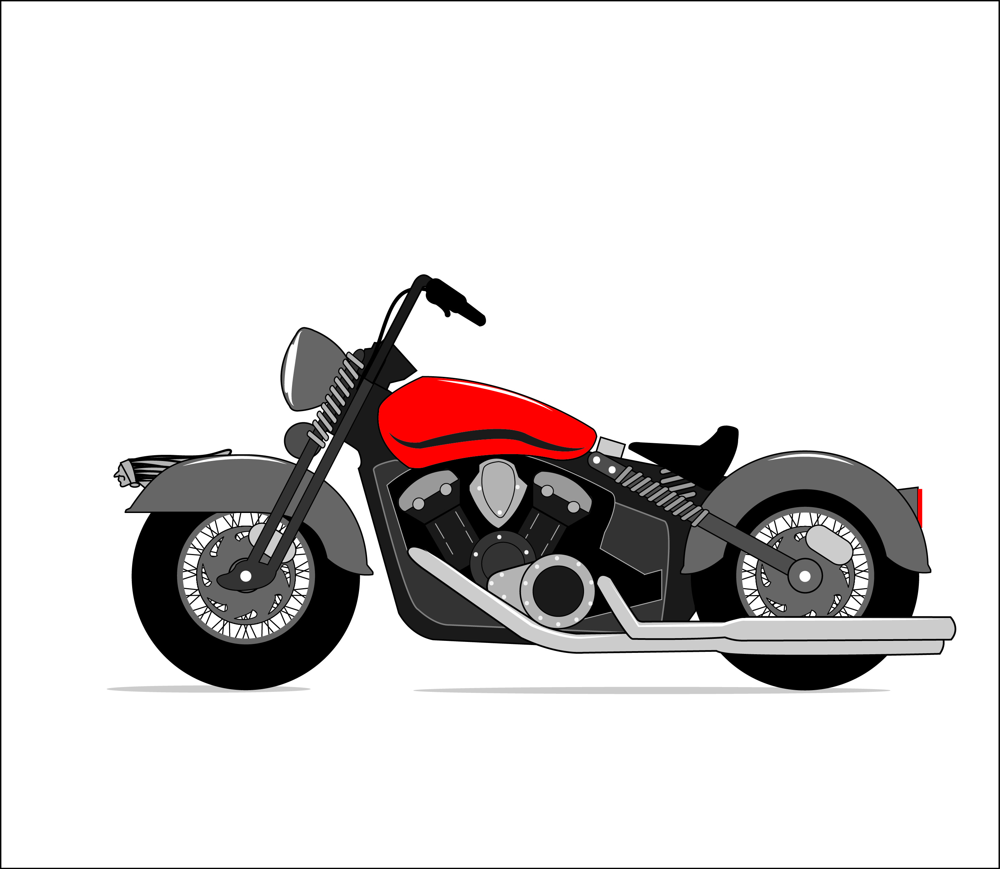

I am proposing a build that would be best described as a bobber. 5.00 X 16" wheels & tires on spoked wheels. Wrap around fenders on both wheels. The front end would be a beefy springer front end and bobber headlight. The gas tank would be a fatbob tank. A sprung seat along with a early vintage tombstone taillight. Also a vintage hood ornament or radiator cap on the front fender. Overall I want something “thick and beefy”. Hey, maybe that will be the name for this bike!

previous builds
I built my first chopper in 2006. During that time, my wife was in graduate school so I needed something to fill my nights and weekends. My local tech college had welding and machining night classes, so I did one semester of welding, and 2 years of machine work (manual lathe and mill). These bikes are the result of that passion and hard work.